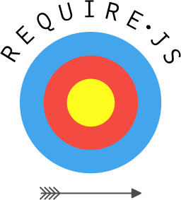
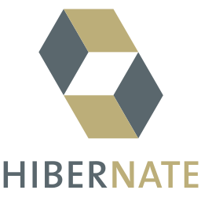
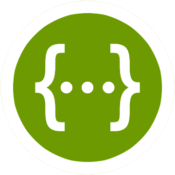

Gumga IO
Apresentação das tecnologias utilizadas pela Gumga
O ínicio
A GUMGA S/A (Grupo Unido Maringá) inicia suas atividades com a intenção de melhorar a qualidade, diminuir custos e prazos, criar produtos em conjunto e, principalmente, iniciar uma era de integração.
Onde está
- Gumga Framework FrontEnd
- Componentes AngularJS
- Gumga Framework BackEnd
- Segurança
- Gerador
Futuro
- Gumga Services
- Gumga Dashboard
FrontEnd

O que o FrontEnd da Gumga facilita o meu trabalho?
Aplicação estática construída com AngularJS e Bootstrap

Automatizador de Tarefa
Gulp.js

Suporte a Testes Unitários
Karma/Jasmine


Versionamento Open Source
Github

Ferramenta de Integração Contínua
Travis CI

Lazy Loading de Arquivos
Require.JS
Distribuição de Componentes
Bower

BackEnd

O que o BackEnd da Gumga facilita o meu trabalho?
Spring

Conexão com Banco de Dados
Hibernate / JPA
Documentação automática
Swagger
Gerenciamento de Dependências
Maven
SISTEMA PROPOSTO
-
Reserva de Salas
-
Recursos técnicos necessários na sala pra reserva
- Datashow
- Conferência
- Controle de slides com laser
- Disponibilidade de horário
- Quantidade de pessoas por sala
-
Recursos técnicos necessários na sala pra reserva
- Cadastro de salas
- Listagem
- Cancelamento de Reserva
- Cadastro de Funcionário
Como falar com a Gumga?

gumgabr
gumga
Sugestões de melhorias em componentes, abram uma issue no github:
github.com/GUMGA/components

Tentamos responder o mais rápido possível (sério).